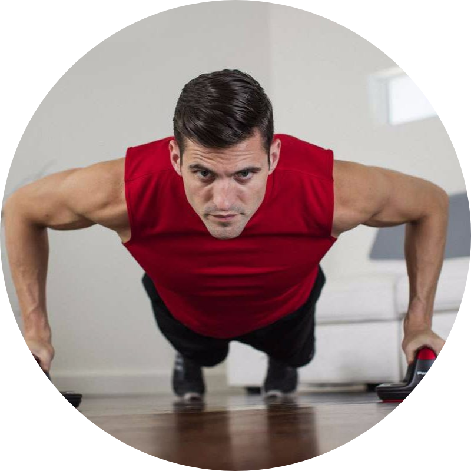
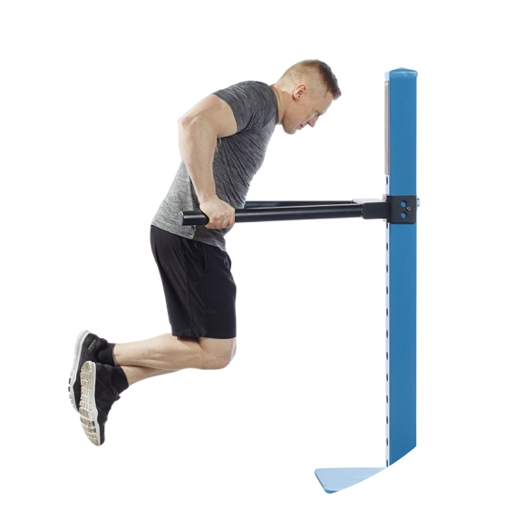

Calisthenics (American English) or callisthenics (British English) is a form of exercise consisting of a variety of movements that exercise large muscle groups (gross motor movements), such as running, standing, grasping, pushing, etc. These exercises are often performed rhythmically and with minimal equipment, as bodyweight exercises. They are intended to increase strength, fitness, and flexibility, through movements such as pulling, pushing, bending, jumping, or swinging, using one's body weight for resistance. Calisthenics can provide the benefits of muscular and aerobic conditioning, in addition to improving psychomotor skills such as balance, agility, and coordination. Urban calisthenics is a form of street workout; calisthenics groups perform exercise routines in urban areas. Individuals and groups train to perform advanced calisthenics skills such as muscle-ups, levers, and various freestyle moves such as spins and flips. Sports teams and military units often perform leader-directed group calisthenics as a form of synchronized physical training (often including a customized "call and response" routine) to increase group cohesion and discipline. Calisthenics is also popular as a component of physical education in primary and secondary schools over much of the globe. In addition to general fitness, calisthenic exercises are often used as baseline physical evaluations for military organizations around the world. Two examples are the U.S. Army Physical Fitness Test and the U.S.M.C. Physical Fitness Test.
The word calisthenics comes from the ancient Greek words kalós (καλός), which means "beautiful" (to emphasize the aesthetic pleasure that derives from the perfection of the human body), and sthenos (σθένος), meaning "strength" (great mental strength, courage, strength, and determination). It is the art of using one's body weight as resistance in order to develop physique. The practice was recorded in use in Ancient Greece, including the armies of Alexander the Great and the Spartans at the Battle of Thermopylae. Calisthenics is associated with the rapidly growing international sport called street workout. The street workout consists of athletes performing calisthenics routines in timed sessions in front of a panel of judges. The World Street Workout & Calisthenics Federation (WSWCF) based in Riga, Latvia orchestrates the annual National Championships and hosts the World Championships for all the national champions to compete at one competition. The World Calisthenics Organization (WCO) based in Los Angeles, CA. promotes a series of competitions known globally as the Battle of the Bars. The WCO created the first-ever set of rules for formal competitions, including weight classes, timed round system, original judging criteria and a 10-point must system - giving an increasing number of athletes worldwide an opportunity to compete in these global competitions.
| Name | Description | Picture | How to do |
|---|---|---|---|
| Push Up | Performed face down on the floor, palms against floor under the shoulders, toes curled upwards against the floor. The arms are used to lift the body while maintaining a straight line from head to heel. The arms go from fully extended in the high position to nearly fully flexed in the low position while avoiding resting on the floor. Chest, shoulders, and triceps are trained with this exercise. An easier version of this exercise consists of placing the hands on a wall and then bending and straightening the arms. Buy equipments for push up here |  | |
| Sit Up | A person lies on their back with their legs bent. They bend at the waist and move their head and torso towards their legs. They then lower themselves back down to the start position. For people who find it difficult to get down onto the ground, a similar range of motion can be achieved by standing with the legs slightly bent, and then bowing slightly and straightening up again. Buy equipments for sit up here |  |
|
| Squats | Standing with feet shoulder-width apart, the subject squats down until their thighs are parallel with the floor; during this action, they move their arms forwards in front of them. They then return to a standing position whilst moving their arms back to their sides. Squats train the quadriceps, hamstrings, calves, gluteal muscles, and core. The height of the squat can be adjusted to be deeper or shallower depending on the fitness level of the individual i.e. if someone struggles with exercise they can do half or quarter squats. They are among the most versatile calisthenic exercises because they can be performed easily in most environments and with a limited amount of space.. Buy equipments for squats here |  |
|
| Chin Up | For a chin-up, the palms of the hands are facing the person as they pull up their body using the chin-up bar. The chin-up focuses on the biceps muscles, rather than the latissimus dorsi muscle which is the focus of the pull-up. Buy equipments for chin up here |  |
|
| Pull Up | For a pull-up, the bar is grasped using a shoulder-width grip. The subject lifts their body up, chin level with the bar, and keeping the back straight throughout. The bar remains in front of the subject at all times. The subject then slowly returns to starting position in a slow controlled manner. This primarily trains the lats or upper back muscles, as well as the forearms. Buy equipments for pull up here | ||
| Dips | Done between parallel bars or facing either direction of trapezoid bars found in some gyms. Feet are crossed with either foot in front and the body is lowered until the elbows are in line with the shoulders. The subject then pushes up until the arms are fully extended, but without locking the elbows. Dips focus primarily on the chest, triceps, and deltoids, especially the anterior portion. Buy equipments for dips here |  |